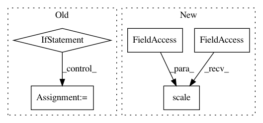

bf689405b30d2c0d646aa714ad1a5fa9c9712b94,DCSCN.py,SuperResolution,load_datasets,#SuperResolution#Any#Any#Any#Any#Any#,147
Before Change
if stride_size == 0:
stride_size = batch_image_size // 2
if self.bicubic_init:
resampling_method = "bicubic"
else:
resampling_method = "nearest"
datasets = loader.DataSets(self.scale, batch_image_size, stride_size, channels=self.channels,
jpeg_mode=self.jpeg_mode, max_value=self.max_value, resampling_method=resampling_method)
if not datasets.is_batch_exist(batch_dir):
After Change
for i in range(self.test.input.count):
self.test.input.images[i] = util.scale(self.test.input.images[i], 0, 255, 0, self.input_max)
self.test.input.quad_images[i] = util.scale(self.test.input.quad_images[i], 0, 255, self.output_min, self.output_max)
self.test.true.quad_images[i] = util.scale(self.test.true.quad_images[i], 0, 255, self.output_min, self.output_max)
def open_datasets(self, target, data_dir, batch_image_size, stride_size=0):
In pattern: SUPERPATTERN
Frequency: 3
Non-data size: 5
Instances
Project Name: jiny2001/dcscn-super-resolution
Commit Name: bf689405b30d2c0d646aa714ad1a5fa9c9712b94
Time: 2018-03-29
Author: jin.yamanaka@gmail.com
File Name: DCSCN.py
Class Name: SuperResolution
Method Name: load_datasets
Project Name: jiny2001/dcscn-super-resolution
Commit Name: 2a5cadaf934b4ca056b97c2bced8046171ceea8e
Time: 2018-03-29
Author: jin.yamanaka@gmail.com
File Name: DCSCN.py
Class Name: SuperResolution
Method Name: load_datasets
Project Name: pytorch/audio
Commit Name: 101e0d5f3843d144fb704ab93b11ac3b17d239a2
Time: 2019-05-16
Author: jamarshon@fb.com
File Name: torchaudio/transforms.py
Class Name: Scale
Method Name: __call__